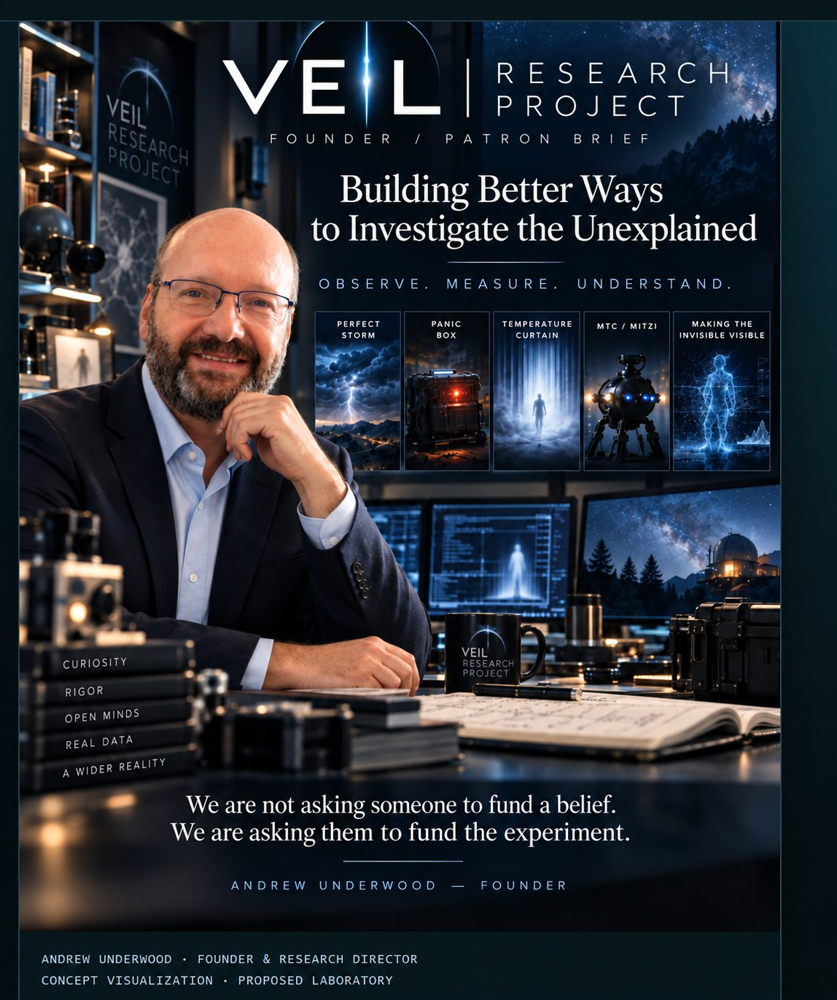
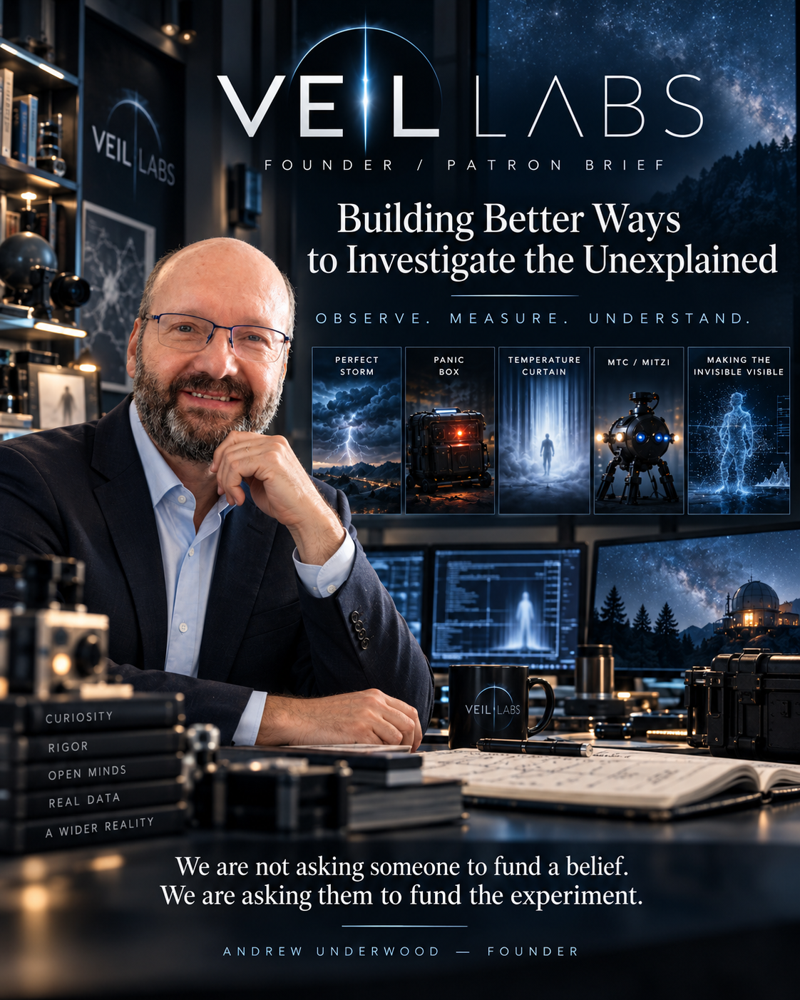
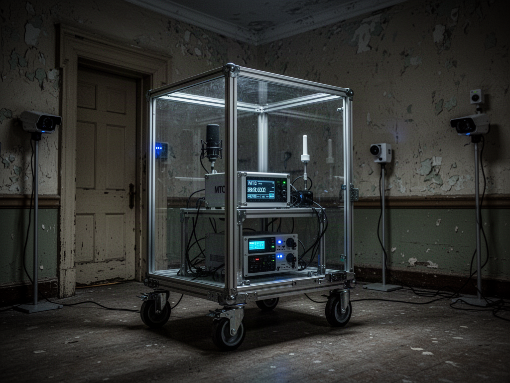
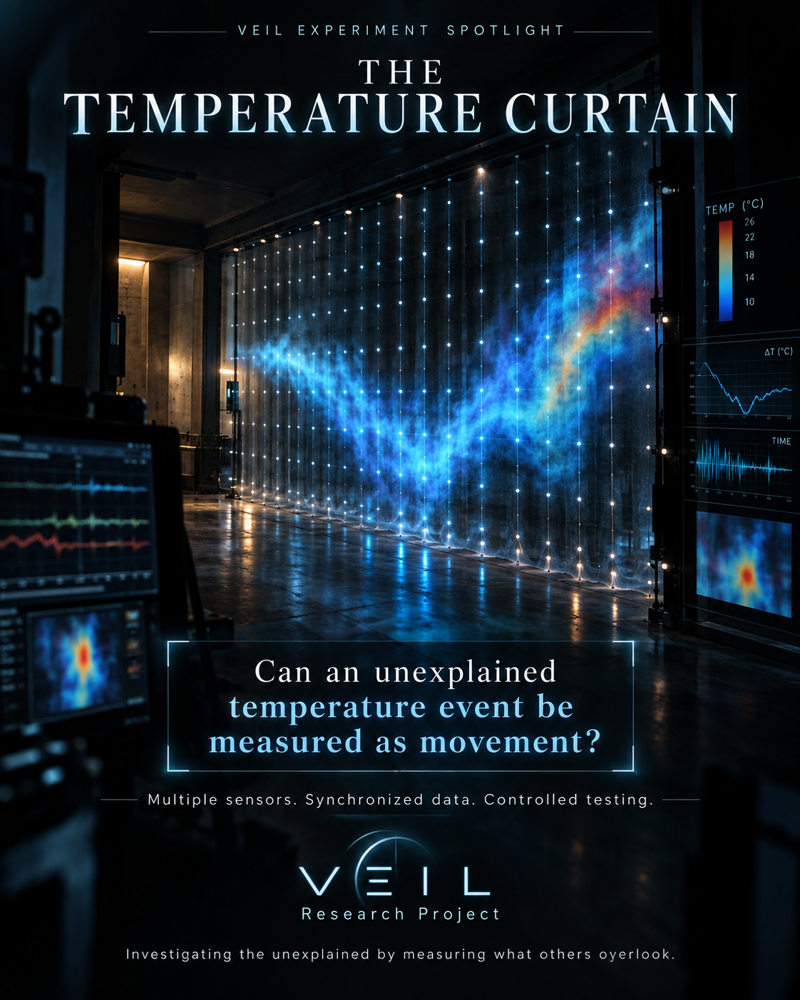
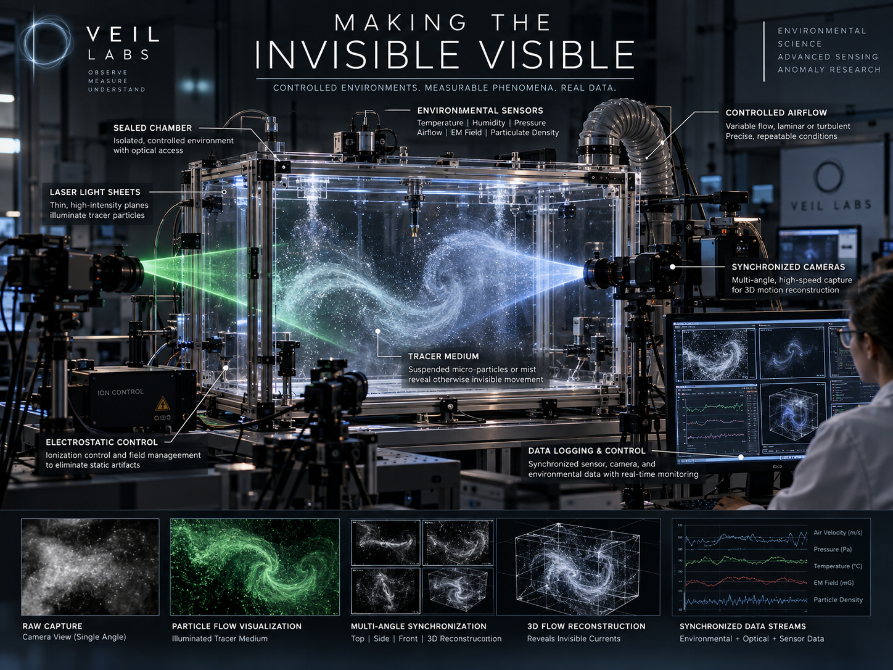
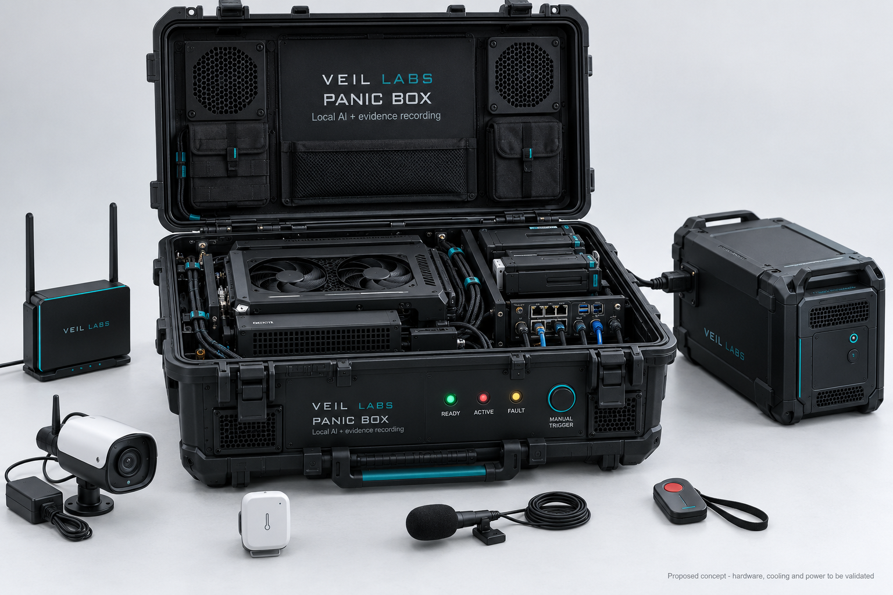
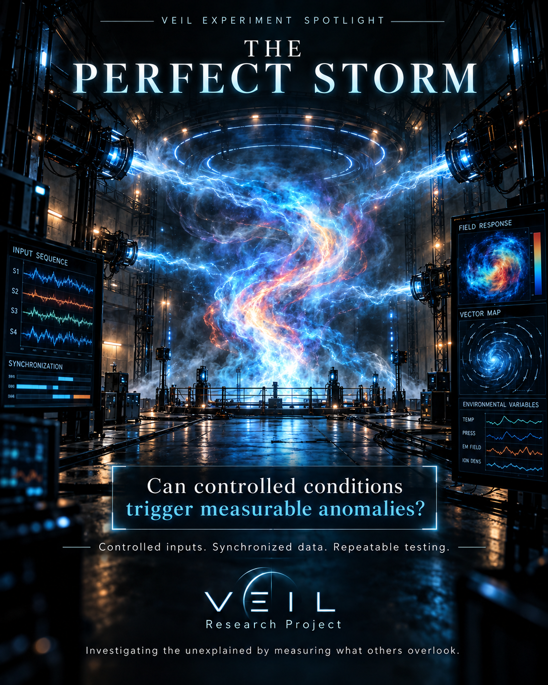

The question
What if we stopped asking whether to believe—and started asking what we can measure?
An independent research initiative developing controlled experiments, synchronized instrumentation and evidence-first field systems to investigate reported anomalous phenomena.
Facebook welcomes community conversation; GitHub hosts technical discussion and requires a free account to comment.

Before it is built, it must first be seen. Discover our proposed future research center through an immersive concept-art tour, then explore a separate interactive 3D layout. Visit the high-bay experiment hall, the proposed upstairs SIGNAL Command Center, and the expanded fabrication workshop.
Future facility concept only. The research center does not yet exist and is not funded or engineered. VEIL is presently an independent research initiative developing experimental methods and prototypes. Cinematic concept images and the simplified 3D model are different kinds of visualization.
SIGNAL is VEIL's evolving digital science host. Ask guided questions, discover our instrument concepts, and help shape his next chapter. His imperfections, voice experiments and earlier development milestones are part of the journey.
SIGNAL currently uses authored dialogue and optional browser-generated speech. He is not an autonomous research AI, does not learn from visitor messages automatically, and is not connected to live laboratory instruments. Suggestions are prepared locally for visitors to share voluntarily with VEIL.
Public beta · Free to explore · Voice optional · No account required · Human-reviewed updates
The official VEIL Research Project Facebook Page is open. Come explore curious questions, the history of unusual research equipment, and the science behind investigating unexplained experiences.
People who believe, people who are skeptical, and everyone in between are welcome. Share a story or ask a question without ridicule; we will distinguish personal experiences and historical claims from controlled observations and verified evidence.
Please protect others' privacy. No harassment or spam. Research methods, limitations and project milestones remain available here on the VEIL website.

Founder & Lead Researcher · VEIL Research Project
Andrew Byron Underwood is the founder and lead researcher of VEIL Research Project, an emerging independent initiative based in the Erie, Pennsylvania region. Drawing on his past experience investigating reported paranormal activity and his professional background in industrial manufacturing, estimating, and technical sourcing, Andrew is working to bring disciplined engineering questions to a field often dominated by personal interpretation.
His goal is to develop interoperable experimental systems that preserve raw evidence, synchronize measurements, establish reliable baselines, and actively test ordinary explanations before drawing conclusions. VEIL's current work includes proposed optical, thermal, electromagnetic, and observer-free audio experiments, alongside portable monitoring and controlled-chamber concepts.
Andrew envisions a dedicated research center where engineers, scientists, skeptical reviewers, and field investigators can collaborate on repeatable testing. The center and its instruments remain proposals in development, not a funded or physically validated laboratory.
Andrew originated the project's vision and experimental directions, with AI assistance in refining proposals, documentation, and virtual test plans. He welcomes rigorous questions and independent review.
What if we stopped asking whether to believe—and started asking what we can measure?
Establish baseline conditions, preserve raw data and deliberately challenge unusual results with conventional explanations. The aim is repeatable research—not a claim that paranormal phenomena have been proven.
Andrew Underwood brings paranormal investigation experience and a manufacturing, estimating and technical sourcing background to the development of measurement-driven research concepts.
ChatGPT has substantially assisted with proposal drafting, technical documentation and research planning. Proposed concepts and simulations do not constitute independent engineering review or experimental validation.
On October 8, 2026, VEIL submitted NSF SBIR/STTR Project Pitch 00128532 under Scientific Instrumentation. Submission is not an award or endorsement.
VEIL's Windows-based Mobile Trans-Communication (MTC) prototype played 11 prerecorded questions through desktop speakers and recorded the room continuously using a HyperX SoloCast USB microphone. A 5-minute, 27-second unattended session completed, and the saved acoustic recording was manually reviewed.
Each question was followed by a 15-second response interval. The software's integrity review returned PASS_WITH_MANUAL_REVIEW_REQUIRED; the researcher then confirmed audibly that the prerecorded questions were captured in the saved microphone WAV file. This is an initial engineering demonstration, not independent validation or evidence of paranormal communication.
Following a scientific-readiness review, VEIL now distinguishes three preliminary research priorities, two enabling engineering systems and two deferred exploratory concepts. No controlled paranormal experiments or paranormal effects have been validated; the first MTC acoustic bench tests were completed October 23, 2026. An NSF SBIR/STTR Project Pitch was submitted October 8, 2026; no funding decision has been announced.
Read the development updates →VEIL is designing a voice-first, conversational AI interface for its proposed research center so scientists, engineers and investigators can work hands-free, speak observations and questions naturally, and receive spoken responses without constant manual data entry.
Authorized researchers would verbally request readings, initiate supported workflows and record observations as attributed, timestamped experiment notes linked to synchronized sensor data.
The proposed interface would connect research instruments approved for development through shared experiment context and data retrieval. Exploratory concepts would be integrated only if future scientific review justifies their testing.
Critical equipment actions require authorization, confirmation and independent safety interlocks. Silent and observer-free recording modes protect sensitive experiments, including MTC/EVP testing, from voice contamination.
Development status: mandatory architectural requirement and proposed capability. A laboratory-wide voice AI interface has not yet been built, deployed or validated.
VEIL distinguishes preliminary research protocols, supporting instruments and exploratory hypotheses. These classifications are planning decisions, not scientific results.
Find existing experiments, technology and null findings. Document what has and has not been attempted.
Separate established measurement physics from unverified assumptions and speculative mechanisms.
Prespecify the endpoints, controls, calibrations, blinding and analysis required for a meaningful test.
State in advance what results would refute the idea, trigger redesign or halt further investment.
Three preliminary research priorities with testable questions. MTC has completed an initial acoustic engineering bench trial, but no controlled paranormal pilot or complete scientific readiness review.

Compare unattended audio recordings against matched controls, excluding observers from the monitored area and testing listener bias and ordinary noise.
REVIEW DETAILS →
Calibrate a distributed temperature grid with known heat/cold sources. Measure accuracy, drift, lag and false alarms; avoid unvalidated three-dimensional shape claims.
REVIEW DETAILS →
Test whether a controlled light-grid and tracer configuration can reliably register known physical disturbances that interact with light or particles.
REVIEW DETAILS →Enabling engineering systems, not independently established paranormal detectors.

An integrated system proposed for synchronized recording, event preservation and remote alerts. Validate data integrity, clocks, uptime and false alarms first.
REVIEW DETAILS →
Calibrated multi-axis magnetic-field exposure apparatus using established electromagnetic engineering. Any extraordinary environmental effect remains unproven.
REVIEW DETAILS →These concepts are available for critical review but are not currently cleared for dedicated hardware development or paranormal field trials.
There is no established way for stone or other building materials to record and replay historical experiences. An EM-off-after-exposure protocol could study ordinary material responses, but would not establish historical replay.
Read the critical concept review →The isolated chamber might have ordinary engineering uses, but proposed historical-object and communication conditions lack justified, preregistered interaction tests.
Read the critical concept review →Exploratory pages are preserved for transparency, not endorsed as validated theories. Other speculative ideas are not featured. Portfolio inclusion does not imply novelty, patentability, funding or completed research.
VEIL’s planned instruments share a common emphasis: synchronized measurement, rigorous controls, raw evidence preservation and transparent review.
Contact · Collaborate · Support →VEIL welcomes thoughtful criticism as much as curiosity. Tell us what we should measure, which ordinary causes we need to eliminate, and how to make the experiments more rigorous.
Technical comments on GitHub require a free account. Our Facebook Page welcomes respectful community discussion; please protect personal privacy.